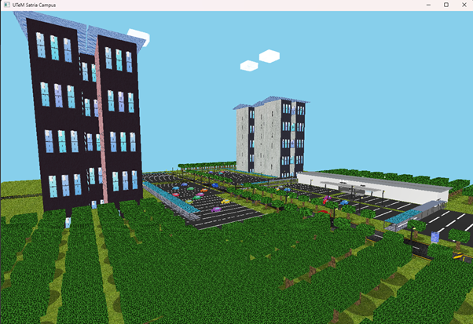
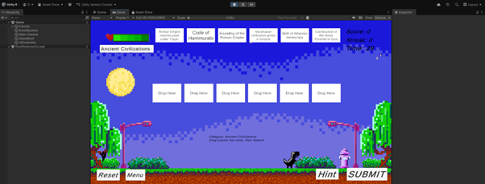
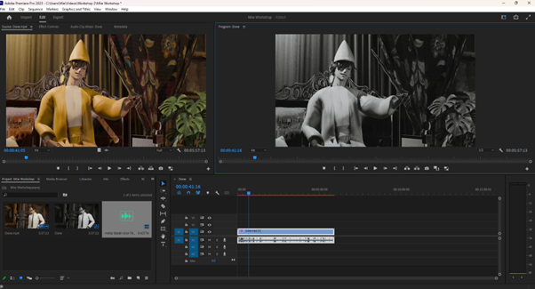
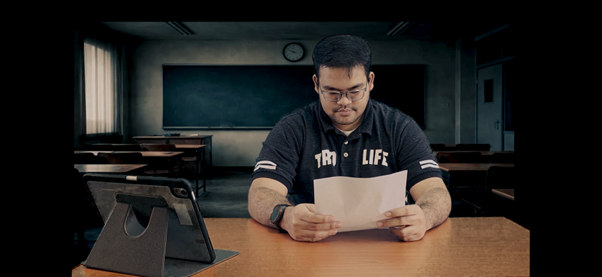

WHERE CURIOSITY MEETS CREATION
Building
new worlds.
I’m Syahmi. A creative developer turning ideas into interactive experiences, 3D environments, and stories that move.
DISCOVER
DRAG TO EXPLORE
A shift in perspective
A little curiosity.
An entirely new perspective.
Start with a question.
What happens when code becomes a place you can explore?
Look a little closer.
A scene, a system, a story. Each project is another way to see an idea.
Build the next perspective.
Games, 3D graphics, and motion design. Connected by curiosity.
Keep exploring. The perspective changes.
01 / SELECTED EXPLORATIONS
A few things
I’ve brought to life.
A collection of experiments.
Each one, a new possibility.

A world in OpenGL
Raw primitives, dynamic lighting, and hand-mapped textures. A campus built one piece at a time.
C++ · 3D ENVIRONMENT
Learning through play
Drag-and-drop matching with instant feedback. A clear, replayable learning interface made in Unity.
UNITY · C# · GAME DESIGN
Finding another dimension
Materials, global illumination, and texture rendering. An interior study built in Blender.
BLENDER · MODELING · LIGHTING
Making every frame matter
Kinetic typography timed to music. Timing, easing, and compositing explored in After Effects.
AFTER EFFECTS · MOTION DESIGN02 / THE MIND BEHIND THE PIXELS
Always curious.
Never standing still.
From a line of code to an entire 3D scene, I enjoy the process of making something that didn’t exist before. My work lives at the intersection of technology, design, and a willingness to experiment.
A little more about me03 / TOOLS OF EXPLORATION
Different tools.
One creative instinct.
Explore in 3D
A different point of view.
Rotate a procedural display showing my OpenGL campus study. A small interactive companion to the work, built for this portfolio.
Drag to rotate. Arrow keys work too.Screen study
04 / START A CONVERSATION
OPEN FOR WHAT’S NEXT